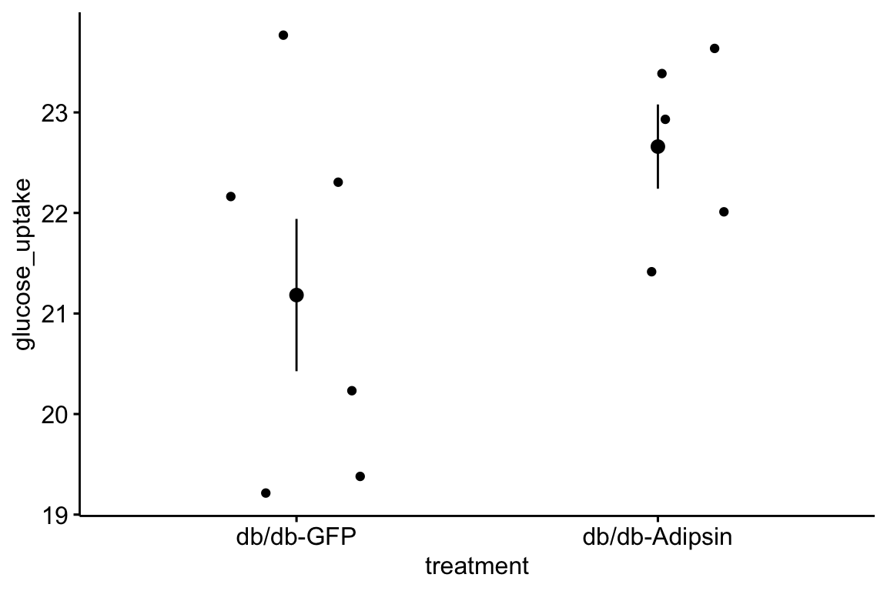

Chapter 3 Pretty good plots
When it comes to plotting, many researchers mindlessly generate plots that are easily generated by the software and look like the typical plots published in the field. The resulting plot is comforting because it is familiar, not because it effectively communicates what a good plot should communicate.
Plots should be the focus of both the reader and researcher. Instead of mindless plotting, a researcher should ask a series of questions of every plot
- What is the point of each element in a plot?
- Are these the points that I most want to communicate?
- Are there better practices for communicating these points?
- Are the points that I want to communicate that are not covered by these elements?
The answer to these questions should inform what is and what is not plotted. The result is a pretty good plot. A typical pretty good plot contains some combination of
- Modeled effects with confidence intervals. “Effects” are the coefficients of a model, or contrasts constructed from the model, such as all pairwise differences between the means of the levels of a factor. Inferences are typically made from the estimated effects
- Modeled means and standard errors or confidence intervals.
- Raw data points or a summary distribution of these.
3.1 Pretty good plots show the model and the data
The data to introduce best practices in plotting come from “The enteric nervous system promotes intestinal health by constraining microbiota composition”2. The researchers found that zebrafish with a sox10 mutation lacked an enteric nervous system and developed a microbiota-dependent inflammation. The paper includes several experiments to probe the hypothesis that the ENS regulates microbial community composition and, in turn, inflammatory status. The data here are from Fig. 2 of the paper, which reports the results of one of a set of experiments to test the hypothesis that microbiota from sox10 mutants (that induce inflammation) are necessary and sufficient to induce inflammation in wildtype guts. In this experiment, homogenized intestines and their microbial community from four different donor groups were added to the flasks housing the zebrafish. The response variable is neutrophil count. Neutrophils are a white blood cell that increase in number during inflammation. The four treatment levels are the different donors of intestinal microbes: WT (wild type), GF (germ free, so no microbes are transferred), iapMO (a control “for the possibility that nonbacterial factors such as host pro-inflammatory cytokines rather than microbial derived factors cause transmissible intestinal inflammation”), and sox10.
3.1.1 Pretty good plot component 1: Modeled effects plot
Biologists infer the biological consequences of a treatment by interpreting the magnitude and sign of treatment “effects”, such as the differences in means among treatment levels. Why then do we mostly plot treatment level means, where effects can only be inferred indirectly, by mentally computing differences in means? Instead, our primary plots should be effects plots, which directly communicate treatment effects, and the uncertainty in the estimates of these effects.

Figure 3.1: Effects Plot
The y-axis contains each of the paired comparisons among the four treatment levels. The x-axis is the response, which is the ratio of the means of the two groups in the comparison. For example, the top comparison shows that guts in fish exposed to sox10 donors have 2.7X more neutrophils per length of gut than guts in fish exposed to wild type donors. The bars are 95% confidence intervals, with is the range of effects that are compatible with the observed data at the 95% level (confidence intervals are disscussed in depth in chapter xxx.). The small end of the interval for the sox10/WT comparison is 1.31, meaning that effects as small as 31% increased neutrophil count are compatible with the data. It is up to the research community to decide if 2.7X or 1.31X are physiologically meaningful effects. p-values from the hypothesis tests are included.
3.1.2 Pretty good plot component 2: Modeled mean and CI plot with jittered raw data
Often the means of the treatment levels are meaningful, for example, if neutrophils per length of gut is a standard measure then researchers working in this area will be familiar with usual and unusal values. The data used in Fig 3.1 are used to plot means and confidence intervals of the mean using a bar chart, which is a pretty good chart type for measures such as counts in which negative values are prohibited and zero is meaningful.
Figure 3.2: Mean and error plot
Fig. 3.2 plots the modeled means, represented by the tops of the bars, the modeled 95% confidence intervals of each mean, represented by the error bars, and the p-values for all pairwise comparisons. What do I mean by modeled means and error intervals?
- Modeled means and error intervals are estimated from the statistical model. Many published plots are of raw means and error intervals, meaning that the mean and error for each treatment level is computed only using the response measures in that treatment level.
- A modeled mean will often be equal to the raw mean, but this will not always be the case, for example if there are covariates in the model, or the researchers are using a hierarchical model (Chapter xxx).
- Modeled error intervals are never the same as the raw error intervals, and are commonly conspicuously different. Almost always, we should plot modeled means and error intervals, since these represent the means that are relevant to inference.
Fig. 3.2 also plots the raw count data as “jittered” black dots. “Showing the data” is a pretty good feature of a plot because it allows the reader to get a sense of the underlying sample size and distribution including outliers, which can be used to mentally model check the published statistical analysis. For example, the jittered dots in Fig. 3.2 suggest a heterogeneity of variances; specifically, the treatment level with the largest mean has a conspicuously higher variance. This pattern violates the assumptions of a general linear model and should raise a red flag to a reader if the researchers used a general linear model to analyze the data.
What a mean-and-error plot fails to show, at least directly, are the effects. To infer the effects from the plot, a reader must perform mental math – either compute the difference or the ratio between pairs of means. This mental math is easy enough if the comparisons are between individual treatment levels but much harder if the comparisons are between pooled sets of treatment levels, for example in a factorial experimental design. The mental math that is excessively difficult is the reconstruction of some kind of error interval of the contrasts, for example the 95% confidence intervals in Fig. ?? and it is this interval that is necessary for a researcher to infer the range of biological consequences that are compatible with the experiment. The inclusion of the p-values for all pairwise comparisons gives the significance level of these contrasts, but of the kinds of summary results that we could present (contrasts, error intervals, p-values), the p-values are the least informative.
3.1.3 Combining Effects and Modeled mean and CI plots – an Effects and response plot.
If one wants to show both effects and the data, then these can be combined.
Figure 3.3: A pretty good plot
If the means do not have any importance in understanding the results, the effects plot can be combined with some kind of a plot summarizing the distribution, such as a boxplot.
Figure 3.4: Another pretty good plot
Regardless, the effects plot is the most important component as this is the illustration of the story a researcher wants to tell.
3.2 Some comments on plot components
- Alternatives to barplots make good plots for the supplement, not the main paper. A prominent trend over the last few years has been the replacement of bar plots with plots that “show the data”, such as jitter plots or dot plots, or that show summaries of the distribution, such as box plots or violin plots. These plot types were developed for exploratory data analysis, not to communicate the results of experiments. All of these plots fail to communicate the results of the statistical model and, because of this, are inferior to an effects plot, and even a mean-and-error plot, if the mean and error are the modeled values. Box/Violoin/Dot/Jitter plots are a useful supplement to an effects plot, either combined with the effects plot as above, or as a supplementary figure.
- Standard error bars, computed from the raw data, can have absurd implications. For example, I sometimes see standard error bars cross \(y=0\) for a response that cannot be negative, such as a count. Even if the standard error bar doesn’t cross zero, it is common to see standard error bars that imply (but do not explicitly show) 95% confidence intervals that cross zero, again for responses that cannot be negative. A standard error bar or confidence interval that crosses zero implies that negative means are compatible with the data. This is an absurd implication for responses that cannot have negative values (or are “bounded by” zero). Explicit or implicit error bars that cross zero are especially common for count responses with small means. If a researcher plots confidence intervals, these should be computed using a method that avoids absurd implications, such methods include the bootstrap and generalized linear models.
- Stars add minimal value. Many researchers add star symbols to a plot indicating the level of significance of a particular paired comparison. An uncommon, but better, alternative would be to add the actual p-value (as above). Adding a p-value (or stars) does communicate model results, and so adds value to a mean-and-error or box/violin/jitter plot. However, much more value would be added by simply reporting an effects plot or a combined effects-and-response plot.
3.3 Working in R
A reasonable goal of any research project should be a script to generate the final plots entirely within the R environment and not rely on external drawing software to add finishing features. ggplot2 is one of the major plotting environments in R and the one that seems to have the strongest following, especially among new R users. ggplot2 has the ability to generate extremely personalized and finished plots. However, creating a plot with multiple layers (bars, lines, error intervals, raw data points, p-values) can often require many hours of googling.
ggpubr is an extension to ggplot2 (it calls ggplot2 functions under the hood) and provides many canned functions for producing the kinds of ggplots that are published in biological journals. With one line of script, a researcher can generate a publishable plot that is as good or better than many published plot. That said, the means and error intervals used in ggpubr plots are the raw and not modeled values, and, consequently, ggpubr is not sufficient to generate pretty good plots. It is easy enough to add custom error bars to a ggpubr plot.
3.3.1 Adding modeled error intervals
ggplot2 and ggpubr compute and plot unpooled error intervals (standard error bars and confidence intervals). Plotting the modeled error intervals “shows the model”. emmeans is a comprehensive and flexible package for computing modeled standard errors and confidence intervals for all of the statistical models covered in this text.
m1 <- glm.nb(count ~ donor, data=exp2d)
emm.m1 <- emmeans(m1, specs="donor", type="response")
effects.m1 <- summary(contrast(emm.m1, method="revpairwise"), infer=c(TRUE, TRUE))
# make emm.m1 a data.table
emm.m1 <- data.table(summary(emm.m1))
# the y column needs to have the same label as the plotted data
setnames(emm.m1, old="response", new="count")3.3.1.1 Modeled error intervals of the effect
(gg1 <- ggdotplot(x="contrast",
y="ratio",
data=effects.m1,
color = "steelblue",
fill = "steelblue",
size=0.5) +
# add either the SE or CI, contained in effects.m1
geom_errorbar(aes(x=contrast, ymin=asymp.LCL, ymax=asymp.UCL),
width=0.15, color="steelblue") +
ylab("Effect ratio") +
geom_hline(yintercept=1, linetype = 2) +
coord_flip() +
NULL)
3.3.1.2 Modeled error intervals of the mean
(gg2 <- ggbarplot(x="donor",
y="count",
data=exp2d,
add=c("mean", "jitter"),
color = "darkgray",
fill = "steelblue",
size=0.5) +
ylab("Neutrophil count") +
# emm.m1 contains the SE and 95% CIs. Either could be plotted. Here I plot the CI
geom_errorbar(data=emm.m1, aes(ymin=asymp.LCL, ymax=asymp.UCL), width=0.1) +
NULL)
Note that the CIs are asymmetric about the mean (and these modeled CIs will never include negative values for count data).
3.3.1.3 Combining effects and response plots
The ggplots are combined using the package cowplot
gg_top <- gg1 + scale_y_continuous(position="right")
plot_grid(gg_top, gg2, nrow=2, align = "v", rel_heights = c(1, 1))
3.3.2 Adding p-values
p-values are added to the base ggpubr plot using stat_compare_means. The pairs to compare are specified with comparison =. The model to compute the p-values is “t.test”. It is important to know what exactly is being computed when analyzing data and reporting results and “t test” is not sufficient to know this. The t-test could be the classic t-test or a Welch test (which adjusts the standard error to account for heterogenity in variance between groups). In this example, there are multiple tests and the standard error could be the pooled estimate estimated from the linear model, or a pairwise estimate. And, given the multiple comparisons, the p-values could be adjusted or not. These kinds of questions can be checked with a function’s help page. ?stat_compare_means doesn’t answer these questions but suggests compare_means, which also doesn’t answer these questions. The script below has checks to see what p-values the function is returning.
pairs_i <- list(c("sox10", "iapMO"), c("sox10", "GF"), c("sox10", "WT"))
ggbarplot(x="donor",
y="count",
data=exp2d,
add=c("mean_se", "jitter"),
color = "black",
fill = "steelblue",
size=0.5) +
stat_compare_means(method = "t.test", comparisons=pairs_i) +
ylab("Neutrophil count") +
NULL
# checks on the p-value
# t-tests using SE pooled over all four groups
check_it <- FALSE
if(check_it==TRUE){
m1 <- lm(count~donor, data=exp2d)
m1.emm <- emmeans(m1, specs="donor")
contrast(m1.emm, method="trt.vs.ctrl", ref=3, adjust="none") # not pooled SE
pairwise.t.test(exp2d$count, exp2d$donor, p.adjust.method="none", pool.sd=FALSE) # this matches
# compare
t.test(count~donor, data=exp2d[donor=="WT" | donor=="sox10"]) # matches, this is Welch t
t.test(count~donor, data=exp2d[donor=="WT" | donor=="sox10"], var.equal=TRUE)
}So the p-values returned by stat_compare_means(method="t.test") are computed from independent Welch t-tests.
3.3.3 Adding custom p-values
3.3.4 Plotting two factors
The data are from figure 6d. This solution requires computing either the raw or modeled means and errors and adding these to a base ggpubr plot. Many packages have summary statistics functions for means, standard deviations, and standard errors. This is easily done by simply computing the statistics using data.table functionality.
# compute raw statistics
# enclosing the line within parentheses prints the result to the console!
(exp6d.raw <- exp6d[!is.na(count), .(count=mean(count),
se=sd(count)/sqrt(.N)),
by=.(treatment, strain)]
)## treatment strain count se
## 1: control WT 13.08333 2.310904
## 2: control sox10 45.61538 6.259903
## 3: transplant WT 16.35714 2.259552
## 4: transplant sox10 18.33333 4.536274Modeled means, standard errors, and confidence limits are conveniently computed using the emmeans (“estimated marginal means”) function from the emmeans package.
# modeled statsistics
m1 <- glm.nb(count ~ treatment*strain, data=exp6d)
(m1.emm <- data.table(summary(emmeans(m1, specs=c("treatment", "strain"), type="response"))))## treatment strain response SE df asymp.LCL asymp.UCL
## 1: control WT 13.08333 2.032161 Inf 9.649528 17.73907
## 2: transplant WT 16.35714 2.289208 Inf 12.433129 21.51961
## 3: control sox10 45.61538 6.132974 Inf 35.048350 59.36837
## 4: transplant sox10 18.33333 3.871911 Inf 12.119140 27.73391# change column "response" to "count" for the ggplot
setnames(m1.emm, old="response", new="count")#pairs_i <- list(c("sox10", "iapMO"), c("sox10", "GF"), c("sox10", "WT"))
pd = position_dodge(0.7)
ggbarplot(x="treatment",
y="count",
data=exp6d,
add=c("mean"),
color = "black",
fill = "strain",
palette = "jco",
position = pd,
size=0.5) +
#stat_compare_means(method = "t.test", comparisons=pairs_i) +
ylab("Neutrophil count") +
# geom_dotplot(aes(fill=strain),
# binaxis='y', stackdir='center', position=pd, show.legend=FALSE,
# color="grey") +
geom_point(aes(fill=strain), position=position_jitterdodge(jitter.width=0.2), show.legend=FALSE, alpha=0.5) +
geom_errorbar(data=m1.emm, aes(x=treatment, ymin=asymp.LCL, ymax=asymp.UCL, group=strain),
position=pd, width=0.1) +
NULL
3.3.4.1 Three factors
Rolig, A.S., Mittge, E.K., Ganz, J., Troll, J.V., Melancon, E., Wiles, T.J., Alligood, K., Stephens, W.Z., Eisen, J.S. and Guillemin, K., 2017. The enteric nervous system promotes intestinal health by constraining microbiota composition. PLoS biology, 15(2), p.e2000689↩